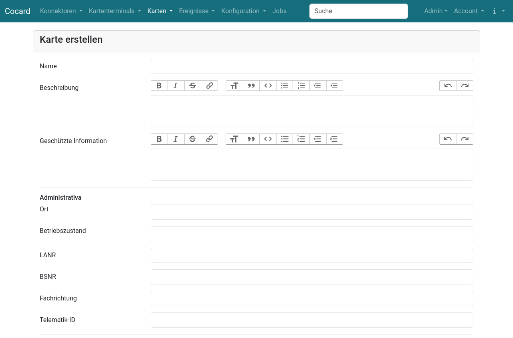

Karte anlegen/bearbeiten
Karten, die bereits über ein mit dem Konnektor verbundenen Kartenterminal erreichbar sind, werden automatisch erkannt und in Cocard gespeichert. In manchen Fällen ist eine Voraberfassung durchaus sinnvoll, etwa wenn man die Bestellung oder den Status einer Karte dokumentieren möchte, bevor diese erstmalig in den Betrieb geht. Das einzige Pflichtfeld für eine Neuanlage einer Karte ist die ICCSN.
| Cocard identifiziert die Karte ausschließlich über die ICCSN. Wenn die Karte bereits erfasst wird, bevor die ICCSN bekannt ist (z.B. während einer laufenden Bestellung), dann trägt man einen Dummy als ICCSN ein. Vor Inbetriebnahme der Karte muss dann unbedingt die ICCSN korrigiert werden, andernfalls legt Cocard eine weitere Karte an und die schon erfassten Daten werden nicht dorthin übernommen! |
Cocard inventarisiert Karten vom Typ SMC-B, SMC-KT, HBA. Ein HBA taucht in Cocard nur dann auf, wenn er bei der periodischen Abfrage gerade zufällig in einem Terminal erreichbar ist. Da sich die Daten im Zertifikat zu einer ICCSN nie ändern, genügt das um zumindest die Existenz des HBAs mit Zertifikatsdaten und vor allem der Zertifikatsgültigkeit zu speichern.
Formularfelder
Name, Beschreibung

| Feld | Beschreibung |
|---|---|
Name |
Kurzbezeichnung der Karte, die bei der Identifikation hilft. z.B. |
Beschreibung |
Freitextfeld für umfangreichere Dokumentation |
Geschützte Information |
Information, die nur der Rolle Admin und der Rolle CardManager angezeigt wird |
Administrativa
| Feld | Beschreibung |
|---|---|
Ort |
Zuordnung zu einem Standort. Nur für die Dokumentation. |
Betriebszustand |
Über den Betriebszustand lässt sich sich die aktuelle Verwendung der Karte einstellen. Nur Karten die "in Betrieb" sind werden im Dashboard angezeigt und von Cocard automatisch überwacht (Card Handle, Pin Status etc.) |
LANR |
Lebenslange Arztnummer zur Dokumentation |
BSNR |
Betriebsstättennummer, auf die eine SMC-B ausgestellt wurde. Ist das Feld leer, extrahiert Cocard diese Information aus dem Common Name. |
Fachrichtung |
Freitext |
Telematik-ID |
Die Telematik-ID wird aus dem Zertifikat extrahiert und bei einer erneuten Zertifikatsabfrage erneut gesetzt. Eine manuelle Erfassung ist nur bei Karten vor der ersten Inbetriebnahme sinnvoll. |
Kartendaten
Diese Felder werden bei jeder Kartenabfrage aktualisiert, ein manueller Eintrag ist nur vor der ersten Inbetriebnahme sinnvoll.
| Feld | Beschreibung |
|---|---|
ICCSN |
Eindeutige Kartennummer |
Kartentyp |
|
CardHolder |
Der Eigentümer der Karte |
Kartenterminal |
Das Terminal, in dem Cocard bei der Abfrage die Karte sieht |
Schachtnummer |
Nummer des Schachtes, in dem die Karte steckt |
Zuweisung eines Kontextes
Für die Abfrage der Karte benötigt Cocard einen Kontext, der entsprechend im Infomodell des Konnektors hinterlegt sein muss. Der Kontext wird bei allen Einzeloperationen einer Karte verwendet wie Karte aktualisieren (für das Card Handle), Pin Status prüfen, Pin Verifizierung starten, Zertifikat abfragen.
Für die Abfrage aller Karten eines Konnektors werden die Kontexte benutzt, die beim Konnektor hinterlegt sind.
Die Felder für die Zuweisung von Karten-Kontexten sind nur bei der Bearbeitung der Karte, aber nicht im Neu-Formular vorhanden. Bei Neunlage muss daher die Karte einmal gespeichert und die Karte noch einmal im Bearbeitungsmodus geöffnet werden.